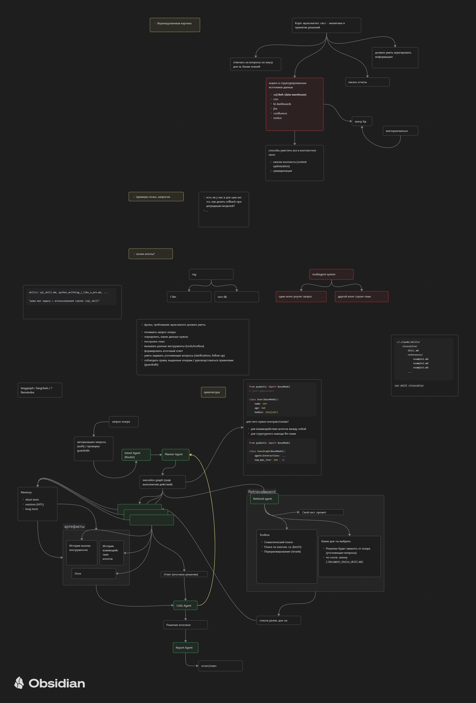

MLSD
Как проходить ML System Design и защищать проекты из резюме
Что такое MLSD
Суть формата
MLSD — это собеседование по проектированию ML-системы end-to-end: от бизнес-задачи и данных до модели, сервиса, мониторинга, стоимости и отказоустойчивости.
На MLSD оценивают не только знание моделей. Смотрят, умеешь ли ты превращать неопределенную продуктовую задачу в рабочую архитектуру с понятными компромиссами.
Что проверяют
- Умеешь ли уточнять требования и ограничения.
- Понимаешь ли данные, разметку, leakage и feedback loop.
- Можешь ли выбрать baseline, модель и метрики.
- Понимаешь ли offline/online pipeline, deployment и monitoring.
- Умеешь ли объяснять trade-offs: качество, latency, стоимость, масштаб, надежность.
Главная стратегия прохождения
Не начинай с модели
В начале MLSD нельзя сразу говорить "возьмем BERT/LightGBM/LLM". Сначала фиксируем задачу, пользователей, сценарии, метрики, ограничения и только потом переходим к ML-части.
Задача -> требования -> метрики -> данные -> baseline -> модель -> offline pipeline -> online serving -> evaluation -> monitoring -> scaling -> риски.
Веди интервьюера
- Проговаривай план: "Сначала уточню требования, затем нарисую high-level схему".
- Задавай уточняющие вопросы, но не зависай на них.
- Каждый выбор объясняй через ограничение: latency, cost, data quality, freshness, traffic.
- После каждого блока делай мини-резюме и переходи дальше.
Плохой MLSD — это набор несвязанных технологий. Хороший MLSD — это связная история о системе, где понятно, почему каждый компонент появился.
Порядок рассказа на MLSD
Сценарий ответа
- Clarify: кто пользователь, какой сценарий, что считается успехом.
- Metrics: ML-метрики, продуктовые метрики, технические SLO.
- High-level design: нарисовать компоненты и поток данных.
- Data: источники, разметка, freshness, качество, leakage.
- Baseline: простая эвристика или классическая модель.
- Modeling: модель, признаки, обучение, валидация, ablation.
- Offline pipeline: сбор данных, feature engineering, training, registry.
- Online pipeline: API, feature lookup, inference, cache, fallback.
- Evaluation: offline, online A/B, human eval, guardrails.
- Deployment: CI/CD, canary, rollback, shadow mode.
- Monitoring: качество, latency, cost, drift, data health.
- Scaling: throughput, batch/stream, sharding, queues, storage.
- Risks: cold start, bias, security, privacy, деградации.
- Next steps: что улучшать после MVP.
Тайминг
- 2-3 минуты — уточнение задачи и метрик.
- 5 минут — схема и основные компоненты.
- 5-7 минут — данные, baseline, модель, обучение.
- 5-7 минут — serving, monitoring, scaling, риски.
Если интервьюер перебивает и уводит глубже в один блок — нормально. Но до перебивания ты должен показать, что видишь систему целиком.
Что рисовать во время MLSD
Визуальная схема обязательна
Рисуй решение в Obsidian Canvas, Miro, Excalidraw или draw.io. На MLSD схема важнее красивых формулировок: она показывает, что ты держишь систему в голове.
- Пользователь или внешний клиент.
- API/backend и основные сервисы.
- Источники данных и хранилища.
- Feature pipeline или retrieval pipeline.
- Training pipeline и model registry.
- Inference service, cache, fallback.
- Monitoring, алерты, feedback loop.
Как не испортить схему
- Рисовать только модель без данных, API и мониторинга.
- Не показывать offline/online разделение.
- Не показывать обратную связь от пользователей.
- Не отмечать fallback, cache и деградации.
- Использовать названия технологий без объяснения потока данных.
Шаблон MLSD-ответа
Готовые переходы
- "Сначала зафиксирую задачу и ограничения, чтобы не проектировать в вакууме".
- "Для MVP я бы начал с простого baseline, чтобы быстро получить нижнюю планку качества".
- "Дальше разделю систему на offline training и online serving".
- "Основной trade-off здесь — качество против latency/cost".
- "Для продакшна нужен fallback, потому что модель может деградировать или быть недоступной".
- "Мониторить будем не только latency, но и data drift, prediction drift и бизнес-метрики".
Как закрывать ответ
В конце коротко повтори архитектуру, назови главный риск и предложи следующий шаг: A/B-тест, улучшение данных, оптимизация inference, расширение мониторинга или переход от MVP к production-grade версии.
Чек-лист перед собеседованием
Что подготовить
- 2-3 схемы своих проектов из резюме в Obsidian Canvas / Miro.
- Метрики: ML, продуктовые, технические.
- Ограничения: latency, traffic, data freshness, cost, privacy.
- Список trade-offs и альтернатив, которые рассматривались.
- Пояснение, что именно делал ты лично.
- Fallback-ответы про scaling, monitoring, drift, cold start, canary, rollback.
Как тренироваться
Запиши на видео 15-минутный рассказ по каждому проекту: 2 минуты high-level, 5 минут architecture, 5 минут ML/data, 3 минуты production/risks. После записи проверь, есть ли в рассказе схема, метрики, trade-offs и личный вклад.
Примеры MLSD-планов к разным проектам
Единый шаблон
- Название проекта и бизнес-задача.
- Пользователи и сценарий использования.
- Входные данные, разметка, freshness, объем.
- Baseline и почему он подходит для MVP.
- ML-подход, признаки, модель, обучение.
- Offline pipeline: data validation, training, registry.
- Online pipeline: API, feature lookup/retrieval, inference, cache.
- Метрики качества, продуктовые метрики, SLO.
- Monitoring: drift, latency, errors, cost, деградация качества.
- Scaling: очереди, батчинг, шардирование, autoscaling, storage.
- Риски и edge cases.
- Что лично сделал кандидат.
- 2-минутная версия и 15-20-минутная MLSD-версия рассказа.
Проекты из резюме
RAG-поиск для службы поддержки
- Задача: отвечать на вопросы операторов/пользователей по базе документов и снижать MTTR.
- Данные: статьи, инструкции, тикеты, FAQ, история обращений; контроль freshness и прав доступа.
- Baseline: BM25/keyword search + ручной выбор статей.
- ML: embeddings, FAISS/Chroma, reranker, генерация ответа LLM с citations.
- Offline: парсинг документов, chunking, embedding, индекс, evaluation set.
- Online: query -> retrieve top-K -> rerank -> context packing -> LLM -> ответ с источниками.
- Метрики: Recall@K, MRR, groundedness, answer accuracy, MTTR, latency P95.
- Monitoring: пустые выдачи, hallucinations, drift документов, cost/query, feedback операторов.
- Личный вклад: retrieval pipeline, FastAPI, индексация, метрики, мониторинг, продакшн-интеграция.
Оптимизация LLM-инференса
- Задача: снизить latency P95 и стоимость GPU при сохранении качества.
- Данные: реальные запросы, распределение длины промптов, traffic peaks, SLA.
- Baseline: исходный LLM endpoint без батчинга/квантования.
- ML/Infra: fp16/int8, quantization, KV-cache, continuous batching, streaming.
- Offline: benchmark на replay-наборе, качество до/после, профилирование.
- Online: gateway -> queue/batcher -> model server -> streaming response -> logs.
- Метрики: TTFT, tokens/sec, P50/P95/P99 latency, cost/query, error rate, quality guardrails.
- Monitoring: GPU utilization, queue depth, OOM, timeout, деградация качества.
- Личный вклад: benchmarking, выбор оптимизаций, production rollout, canary/rollback.
Кредитный скоринг
- Задача: предсказывать риск дефолта и снижать FPR без потери recall по плохим заемщикам.
- Данные: анкета, транзакции, история платежей, антифрод-сигналы, временная валидация.
- Baseline: logistic regression / rules.
- ML: LightGBM/CatBoost/scikit-learn, calibration, feature importance, fairness checks.
- Offline: PySpark ETL, feature generation, train/validation by time, model registry.
- Online: заявка -> feature lookup -> model scoring -> decision rules -> audit log.
- Метрики: AUC, FPR, recall, approval rate, bad rate, business loss/profit.
- Monitoring: PSI, drift признаков, approval distribution, default rate, latency.
- Личный вклад: pipeline, модель, валидация, rollout, объяснимость для бизнеса.
Миграция сервисов в Kubernetes
- Задача: ускорить релизы, снизить инфраструктурные расходы и повысить надежность ML/API-сервисов.
- Данные: инвентарь сервисов, нагрузка, зависимости, SLO, стоимость текущей инфраструктуры.
- Baseline: ручные деплои/VM/docker-compose без autoscaling.
- Архитектура: EKS/K8s, ingress, service discovery, secrets, CI/CD, observability.
- Offline/CI: build images, tests, security scan, deployment manifests.
- Online: traffic routing, canary, HPA, rollback, logs/metrics/traces.
- Метрики: deployment time, uptime, error rate, infra cost, release frequency.
- Monitoring: pod health, CPU/GPU/memory, saturation, alerts, incident metrics.
- Личный вклад: миграционный план, CI/CD, Helm/manifests, rollout, снижение cost.
ASR на Whisper
- Задача: транскрибировать аудио с низким WER и приемлемой задержкой.
- Данные: аудиозаписи, разметка, языки, шумы, доменные термины, privacy.
- Baseline: готовый Whisper без доменного fine-tuning.
- ML: fine-tuning Whisper, VAD, normalization, post-processing, confidence scores.
- Offline: dataset curation, augmentation, training, validation by speaker/domain.
- Online: upload/stream -> preprocessing -> ASR inference -> postprocess -> transcript.
- Метрики: WER/CER, latency, throughput, manual correction rate.
- Monitoring: audio duration, failure rate, WER proxy, queue depth, GPU utilization.
- Личный вклад: fine-tuning, FastAPI inference, latency optimization, monitoring.
mBART-саммаризация диалогов
- Задача: сокращать длинные диалоги саппорта до краткого, точного summary.
- Данные: диалоги, итоговые заметки операторов, языки, PII, токсичность/ошибки.
- Baseline: extractive summary или шаблонные правила.
- ML: mBART/seq2seq, factual consistency checks, length control.
- Offline: очистка диалогов, train/eval, human eval, regression set.
- Online: dialogue chunks -> summarizer -> factuality guardrail -> final summary.
- Метрики: ROUGE/BERTScore, factual consistency, human acceptance, MTTR.
- Monitoring: hallucinations, PII leaks, summary length, operator feedback.
- Личный вклад: модель, evaluation, интеграция в workflow саппорта, guardrails.
Семантический поиск CLIP + FAISS
- Задача: искать визуальные ассеты/кадры по тексту и ускорять рабочий процесс монтажа.
- Данные: изображения/видео, captions, metadata, права доступа, обновления индекса.
- Baseline: поиск по тегам и filenames.
- ML: CLIP embeddings, FAISS index, optional rerank, deduplication.
- Offline: extraction кадров, embedding jobs, index build, validation queries.
- Online: text query -> embedding -> FAISS top-K -> filters -> results UI/API.
- Метрики: Recall@K, MRR, search success rate, time-to-asset, cost/query.
- Monitoring: index freshness, embedding failures, empty results, latency.
- Личный вклад: embedding pipeline, FAISS, quantization/cost reduction, API.
Рекомендательная система
- Задача: повысить CTR, повторные заказы и retention через персональные рекомендации.
- Данные: события пользователей, товары/контент, заказы, просмотры, признаки сегментов.
- Baseline: popularity, rules, TF-IDF similarity.
- ML: ALS, candidate generation, ranking model, сегментация, exploration.
- Offline: event ETL, negative sampling, training, evaluation by time split.
- Online: user -> candidates -> ranking -> business rules -> recommendations.
- Метрики: NDCG@K, Recall@K, CTR, conversion, repeat orders, churn.
- Monitoring: coverage, diversity, popularity bias, cold start, CTR drift.
- Личный вклад: модели, feature pipeline, AWS/Docker/GitHub Actions, A/B-метрики.
Примеры MLSD в записях
Все MLSD-записи
Открыть страницу записей с фильтром MLSD.
Смотреть MLSDMLSD по RAG
Проектирование RAG-системы: корпоративный ассистент для работы с документами. Используй как пример для проектов про retrieval, LLM, citations, hallucination control и feedback loop.
Открыть запись по RAG
MLSD по мультиагентным системам
Проектирование корпоративного ассистента для аналитики и принятия решений. Используй как пример для проектов, где есть orchestration, tools, memory, planning, evaluation и safety.
Открыть запись по Agents
Канва: MLSD по RAG
Схема проектирования RAG: ingestion, retrieval, generation, evaluation и улучшения пайплайна.

Канва: MLSD по мультиагентам
Схема мультиагентной системы: router, planner, retrieval, critic, memory и online-сервис.

Связанные материалы
Легенда
Подготовка self-pitch и сильных историй по проектам.
Открыть легендуРезюме
Проекты и формулировки, которые нужно разворачивать в MLSD-планы.
Открыть резюмеВопросы интервьюеру
Вопросы про команду, стек, процессы и ожидания на MLSD.
Открыть вопросыАрхитектура ML-систем
Роадмап по архитектуре ML-систем и системному проектированию.
Открыть роадмап